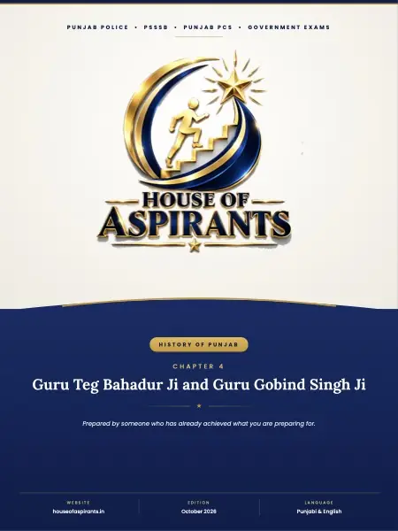

Finished reading? Check what you remember with a quick MCQ test.

Summary
PUNJAB POLICE • PSSSB • PUNJAB PCS • GOVERNMENT EXAMS HISTORY OF PUNJAB CHAPTER 4 Guru Teg Bahadur Ji and Guru Gobind Singh Ji ★ Prepared by someone who has already achieved what you are preparing for. WEBSITE houseofaspirants. in EDITION October 2026 LANGUAGE Punjabi & English
Download
Download Guru Teg Bahadur Ji and Guru Gobind Singh Ji (English) (PDF) - 1.7 MB, 5 pages, hosted on this site. No sign-up, no email wall and no redirect through a third party.
About this file
- File name:
04 - Guru Teg Bahadur Ji and Guru Gobind Singh Ji.pdf - Pages: 5
- Size: 1.7 MB
- Published: 15 October 2026
- Filed under: Study Material
Where this file sits
- Subject: History of Punjab
- Language: English
- Chapter: Chapter 4: Guru Teg Bahadur Ji and Guru Gobind Singh Ji
This page was generated automatically from content/study-material/history-of-punjab/english /04 - Guru Teg Bahadur Ji and Guru Gobind Singh Ji/. Its subject, language and chapter come from the folders the file sits in, its part number from its place among the files beside it, and its title, slug and description from those. The page count and the summary were read out of the PDF itself - the file is the document.